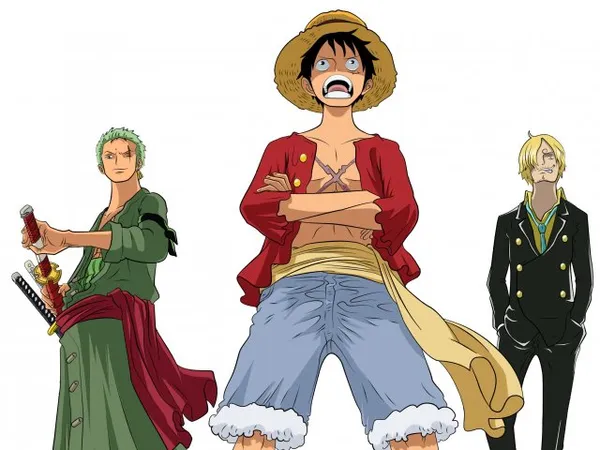

O "Trio Monstro" é o termo usado pelos fãs e, ocasionalmente, pelos personagens de One Piece para se referir aos três lutadores mais fortes do bando do Chapéu de Palha: Luffy, Zoro e Sanji. Eles são conhecidos por sua força sobre-humana e por enfrentarem os inimigos mais poderosos, sendo frequentemente apelidados de "monstros" devido à sua capacidade de combate avassaladora.
